ABOUT ME | ОБО МНЕ
Здравствуйте!
Меня зовут Алексей Вернер,
я композитор, профессиональный диктор и саундпродюсер.
Если Вы пришли на мой сайт, значит Вам интересно все, что связано с инструментальной и коммерческой музыкой, радио и кино.
Вас вдохновляет нестандартная аудиореклама, вы не терпите плохого дубляжа и непременно обожаете Шопена, Морриконе и Эйнауди.
Возможно, Вы сами находитесь внутри этого увлекательного мира звукового искусства ― ищите диктора для рекламного ролика о новых предложениях Вашей компании или актера для
озвучки документального сериала; находитесь в поиске автора саундтрека Вашего фильма;
быть может ― хотите создать для своей уютной радиостанции ее уникальный стиль, словно "озвучив" в джинглах и спотах настроение именно Вашего слушателя...
В любом случае наша встреча не случайна! Мне будет очень приятно найти не только новые профессиональные контакты, но и просто единомышленников, новых друзей и, быть может,
учеников...
Моя жизнь, с самого ее начала тесно связана с музыкой ―
едва начав ходить, я, поразив родителей до глубины их ушей,
бойко уселся за домашнее фортепиано. Самостоятельно.
Оно, надо сказать, долго сопротивлялось, но в конце концов сдалось под напором юного организма.
Следом была специальная музыкальная школа, обучаясь в которой я начал сочинять первые незамысловатые мелодии и попутно играть на квартальных экзаменах клавирные концерты
Баха.
Обильно взрастив свой юный мозг абсолютно разной литературой, в старших классах ко мне, как-то совершенно незаметно подкралась девушка Журналистика и оторвала себе половину
моей,
некогда целой музыкальной души...
После было многое ― маленькое региональное радио и звукорежиссура; корреспондент на ТВ и ведение новостей в прямом эфире; первая озвучка рекламы; любимые с детства,
вдохновляющие прогулки по бульварам и переулочкам Москвы; крупные композиторские работы и медиапланирование.
Всерьез увлекаюсь фото, поэтому смело могу позиционировать себя еще и как начинающий фотохудожник...
Теперь мы знакомы? Всегда Ваш
Alex Werner
Для специалистов:
Сочный мужской голос, a la "loveradiostyle",
в сочетании с диапазоном почти в три октавы.
Именно я могу взять недосягаемый фальцет в песне "Как молоды мы были";
через пару секунд заговорить теплым, коммерческим баритоном;
а еще через минуту записывать детскую аудиокнигу голосом Чеширского кота
● Услуги универсального игрового и классического диктора,
(радио и телереклама, голосовое приветствие, закадровая озвучка документальных фильмов),
запись на сторонней или собственной производственной базе;
● Музыка для кино и телефильмов,
имиджевое звуковое сопровождение трейлеров,
производство эфирной одежды радиостанций;
● Изготовление аудиорекламы (полный цикл, включая, при необходимости,
создание эксклюзивной музыкальной подложки);
Привлечение сторонних дикторов и вокалистов пока, к сожалению, не предоставляется
Возможно сотрудничество с молодыми режиссерами
(студентами театральных ВУЗов)
на некоммерческой основе

Studio One, Cubase, Nuendo, Sonar, и пр. DAW;
DJin (Tract), Sound Forge Pro, Adobe Audition;
Adobe PS CC, Adobe DW, некоторые продукты Corel